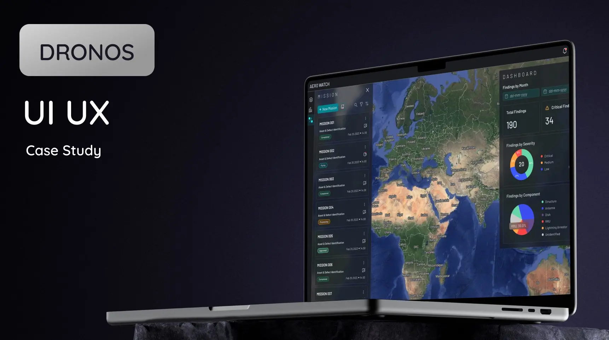
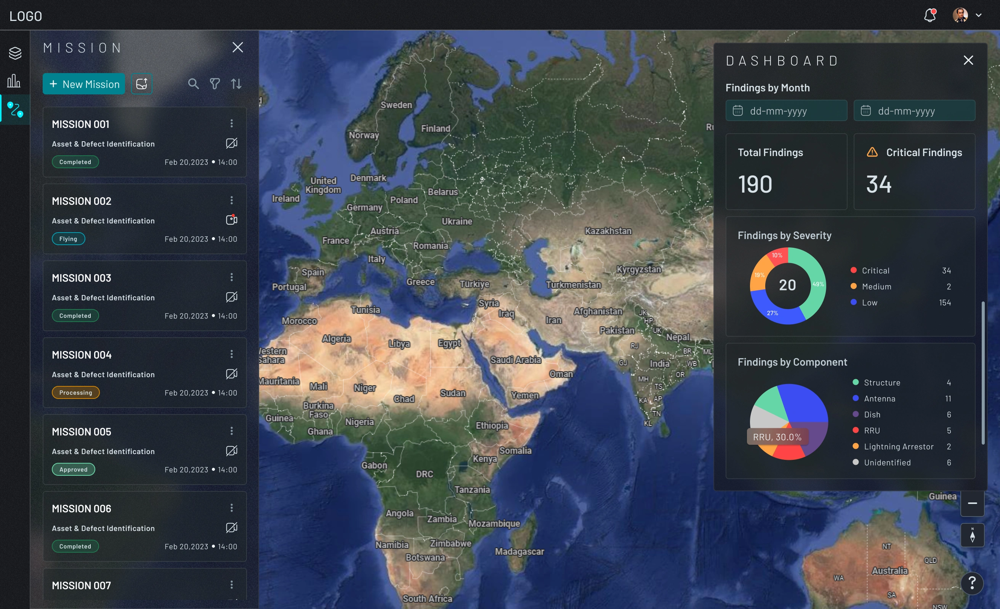
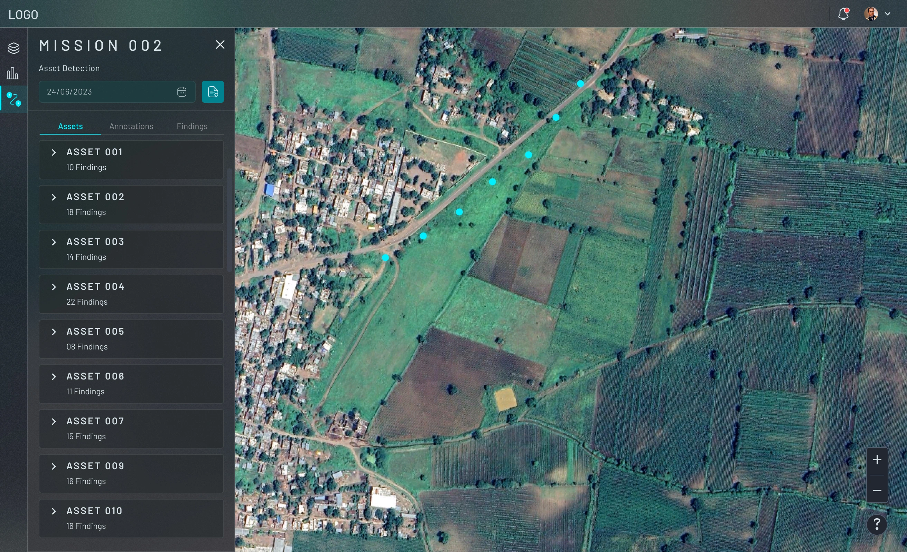
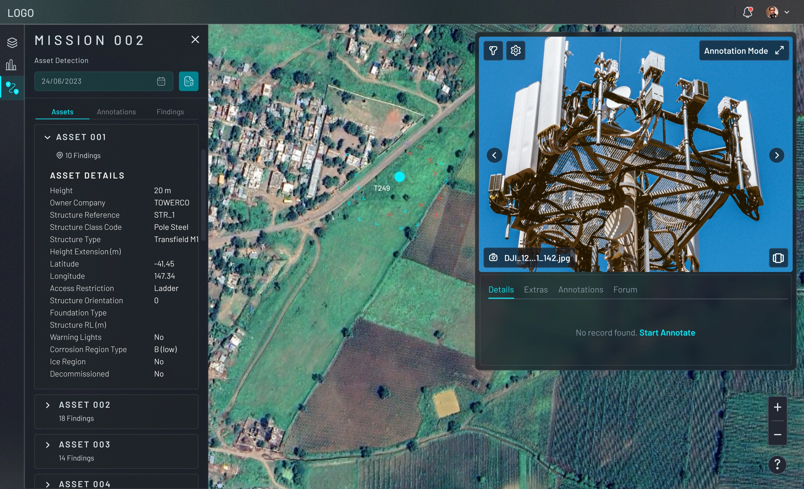
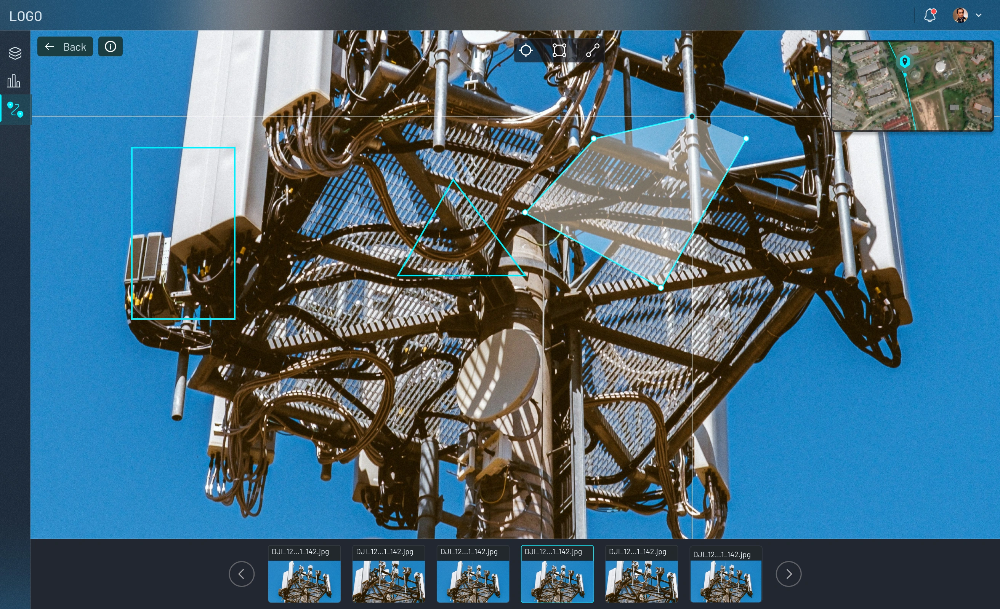
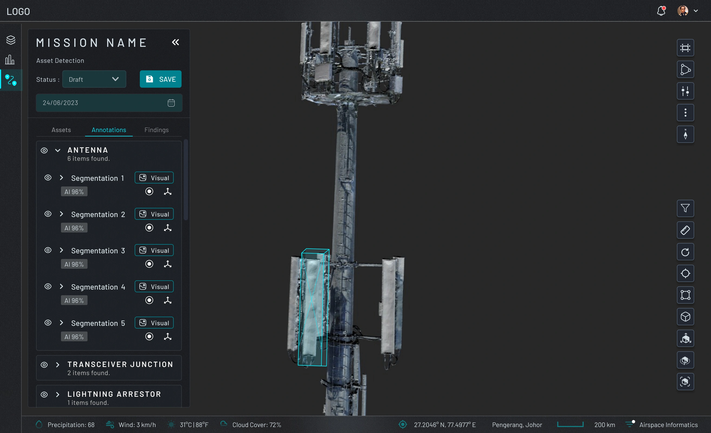
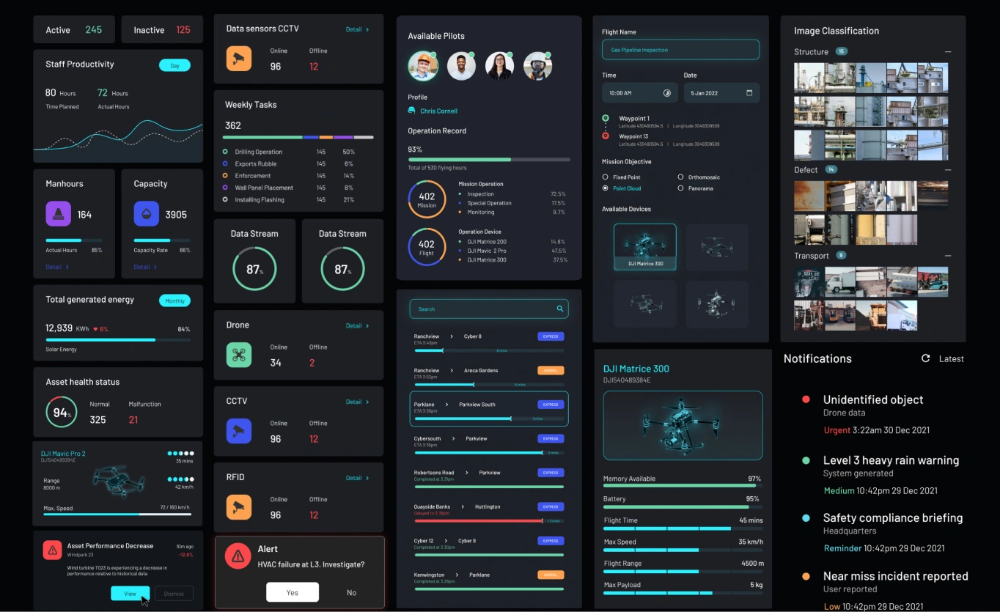

| User Segment | Primary Need | Top Pain Point | Method |
|---|---|---|---|
| Field Engineers 800 Aerorangers |
Speed ≤3 taps, offline mode, AI confidence visibility | App latency on 4G; no offline documentation fallback | Contextual Inquiry |
| Operations Managers Internal Aerodyne |
Mission status overview, daily throughput, exception alerts | No real-time visibility; manual report collation | Interviews |
| Telco Clients Enterprise buyers |
Audit trails, degradation trends, CMMS export, SLA views | 3-day report delay; no mid-flight visibility | Stakeholder Sessions |
| AI Model Behavior 94% accuracy |
Trust calibration — users override even correct predictions | No confidence score; no visual evidence mapping | Usage Analytics |
Every field interaction resolves in ≤3 taps. Latency is an operational risk at 60m elevation, not just a UX inconvenience.
Confidence scores, visual evidence overlays, and one-tap override with reason code. Trust is built through transparency.
Field tool and enterprise dashboard share a data layer; surfaces are role-gated. Complexity is earned, not defaulted.
Every defect tag, report approval, and work order has a visible confirmation state. No ambiguous outcomes.






vs. traditional manual climb inspection model
50+ reports/day; down from 3-day manual cycle
Report-to-sign-off via role-specific portal views
Predictive maintenance via living digital twin